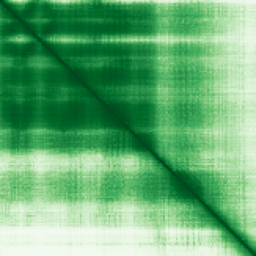

type: protein-evaluation gene: "CEP19" date: 2026-06-01 tags: [protein-scout, nucleoplasm, evaluation] status: scored ---
CEP19 核蛋白评估报告
1. 基本信息
| 项目 | 内容 |
|---|---|
| 基因名 | CEP19 |
| 蛋白全名 | Centrosomal protein of 19 kDa |
| 蛋白大小 | 170 aa / 19 kDa |
| UniProt ID | Q96LK0 |
2. 评分总览
| 维度 | 得分 | 权重 | 加权 | 摘要 |
|---|---|---|---|---|
| 核定位特异性 | 6/10 | ×4 | 24.0 | GO nucleoplasm IDA:HPA + centrosome/centriole IDA; UniProt 仅 centrosome |
| 蛋白大小 | 10/10 | ×1 | 10.0 | 170 aa, very small |
| 研究新颖性 | 10/10 | ×5 | 50.0 | Strict=15 |
| 三维结构 | 7/10 | ×3 | 21.0 | AlphaFold pLDDT 82.8 |
| 调控结构域 | 5/10 | ×2 | 10.0 | Centrosome/ciliogenesis |
| PPI 网络 | 4/10 | ×3 | 12.0 | STRING limited; IntAct 有限 |
| 加权总分 | 127/180** | |||
| 互证加分 | +1.0 | GO nucleoplasm IDA:HPA | ||
| 归一化总分 (÷1.83) | 69.4/100** |
PubMed strict: 15
3. 核定位证据
| 来源 | 定位 | 可信度 |
|---|---|---|
| UniProt | Centrosome/centriole/spindle pole/cilium (ECO:0000269) | Experimental |
| GO-CC | centriole IDA; centrosome IDA:HPA; nucleoplasm IDA:HPA | Direct assay |
| Protein Atlas (IF) | HPA subcellular IF 图像可用（见下方 HPA IF 图像修正块） | 需人工复核 |
HPA IF 状态: HPA subcellular IF 图像已重新获取并嵌入（见下方 HPA IF 图像修正块）；此前“暂无/未可靠获取 IF”的表述为采集失败导致的误报。

PAE 状态: 已获取 PAE 图像。AlphaFold pLDDT 82.8 (mean), 54.2% >90。
4. PPI 网络
| Partner | Source | Score/Evidence |
|---|---|---|
| ANKRD26 | STRING | 0.982 (database) |
| CCDC61 | STRING | 0.981 |
| CEP295 | STRING | 0.980 |
| FGFR1OP | IntAct | two hybrid array |
| ANAPC15 | IntAct | two hybrid array |
IntAct 6 条记录。UniProt 无 interaction 记录。PPI 方向为 centrosome/ciliogenesis 网络，不特异地支持核功能。
5. 总体评价
CEP19 是小型 centrosome 蛋白。GO nucleoplasm IDA:HPA 提供核质定位实验证据，但 UniProt 亚细胞定位仅覆盖 centrosome/centriole/cilium。核定位证据来自 HPA 抗体染色注释（非经典核蛋白）。低-中置信度 nucleoplasm 候选。
关键文献
| PMID | 标题 |
|---|---|
| 28428259 | RABL2 interacts with the intraflagellar transport-B complex and CEP19 and participates in ciliary as |
| 24268657 | Morbid obesity resulting from inactivation of the ciliary protein CEP19 in humans and mice. |
| 38585545 | Severe Early-Onset Obesity and Diabetic Ketoacidosis due to a Novel Homozygous c.169C>T p.Arg57* Var |
| 36074075 | CEP19-RABL2-IFT-B axis controls BBSome-mediated ciliary GPCR export. |
| 37606072 | The IFT81-IFT74 complex acts as an unconventional RabL2 GTPase-activating protein during intraflagel |
PAE 图像暂无数据（未生成本地图片或未可靠获取），结构判断基于AlphaFold pLDDT统计。
<!-- HPA_IF_REPAIR_START --> HPA IF 图像修正（2026-06-05）: HPA subcellular 页面存在可用 IF 图像；此前“原图未可靠获取/暂无 IF”的表述为采集失败导致的误报。HPA 定位: Centrosome (supported)。来源: https://www.proteinatlas.org/ENSG00000174007-CEP19/subcellular


<!-- DOMAIN_HUMANPPI_REPAIR_START -->
Domain/SMART 与 humanPPI 补充（2026-06-07）
SMART / UniProt domain
| Source | Data |
|---|---|
| UniProt | Q96LK0 |
| SMART | 未在 UniProt xref 中检出 SMART 条目 |
| UniProt Domain [FT] | 未检出显式 UniProt Domain feature |
| InterPro | IPR029412; |
| Pfam | PF14933; |
humanPPI / HPA Interaction
Source: https://www.proteinatlas.org/ENSG00000174007-CEP19/interaction
| Partner | Datasets | AF3/HPA structure |
|---|---|---|
| CEP350 | Biogrid, Bioplex | true |
| CEP43 | Intact, Biogrid | true |
| GNL3 | Intact, Biogrid | true |
| PIK3R3 | Intact, Biogrid | true |
| RABL2A | Intact, Biogrid | true |
| RABL2B | Intact, Biogrid | true |
| SLTM | Biogrid, Bioplex | true |
| ANAPC15 | Intact | false |
<!-- DOMAIN_HUMANPPI_REPAIR_END -->